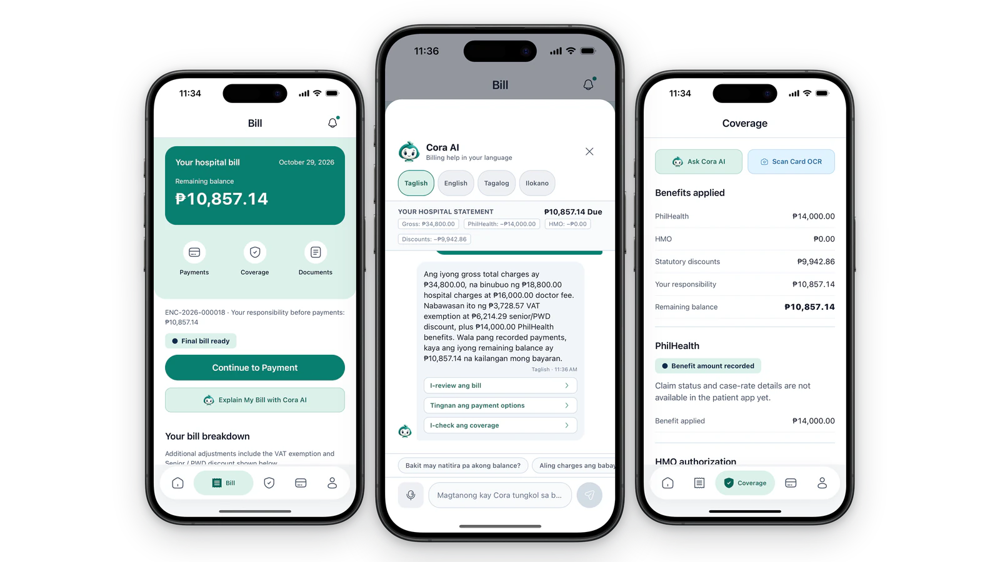

- Program
- BS Computer Science
- University
- Cagayan State University
- Class of
- 2028
- Looking for
- A data engineering internship
McLein Jei Onza
I build full-stack apps and train in data engineering.
Work
5 projects
Things I’ve built.
Community healthcare, hospital billing, local services and personal health records: apps, staff consoles and APIs on Workers and Postgres.
| No. | Project | Field | Platforms | Note |
|---|---|---|---|---|
| 01 | AdvanCare | Community healthcare | Web, Android, iOS | 2nd place, Cagayan Innovation Hack 2026 |
| 02 | MedCore | Hospital billing | Web, Android, iOS | Pitch Perfect, DTI Youth Entrepreneurship Program |
| 03 | SERVIO | Local services | Web, Android, iOS | Launching in Tuguegarao City |
| 04 | MedRec | Personal health records | Web, Android, iOS | Rebuilt for v2 on a serverless stack |
| 05 | Mulat Media | Student publishing | Web | mulat-media.vercel.app |
MedCore
02/05Applies PhilHealth, HMO and senior/PWD deductions in order so cashiers and security see one final balance. A staff dashboard, a patient companion app and an AI concierge.
- Field
- Hospital billing
- Platforms
- Web, Android, iOS
- Built with
- Vercel dashboard, Expo, Hono on Workers, Neon Postgres
- Discharge
- 6 stages, 45-minute target
- Recognition
- Pitch Perfect, DTI Youth Entrepreneurship Program




SERVIO
03/05Services sold like catalog items: upfront prices, instant technician matching, live on-the-way tracking and in-app escrow. Launching in Tuguegarao City.

About
Student first, builder always, now learning how data flows.
Direction A ends here. Journey, Stack, Recognition and Contact follow in the full build.